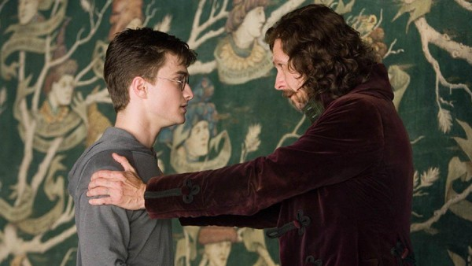
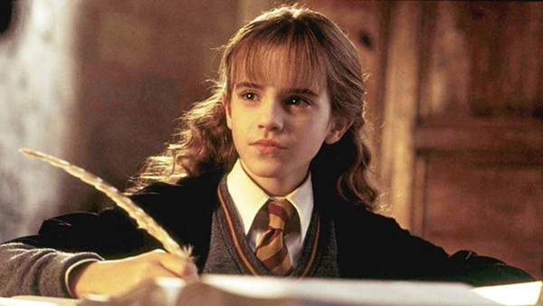
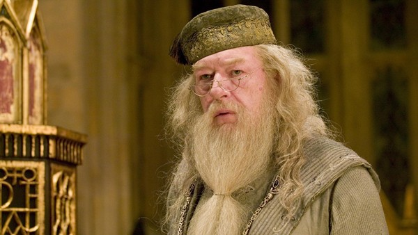

Melhores frases da saga Harry Potter
Sirius Black
O mundo não se divide em pessoas boas e más. Todos nós temos Luz e Trevas dentro de nós. O que importa é o lado que escolhemos para agir. Isso é o que realmente somos.
Se você quer saber como um homem é, preste atenção em como ele trata quem é inferior a ele, não seus iguais.
Hermione Granger
Só porque você tem a profundidade emocional de uma colher de chá, não significa que todos nós também tenhamos.
Espero que estejam satisfeitos com o que fizeram. Podíamos ter sido mortos, ou pior, expulsos.
Alvo Dumbledore
São as nossas escolhas, Harry, que revelam o que realmente somos, muito mais do que as nossas qualidades.
Claro que está acontecendo dentro de sua cabeça, Harry, mas por que isso deveria significar que não é real?
A felicidade pode ser encontrada mesmo nas horas mais difíceis, se você lembrar de acender a luz.
É o medo do desconhecido que nós tememos quando olhamos para a morte e a escuridão, nada mais.
Não tenha pena dos mortos, Harry. Tenha pena dos vivos, e, acima de tudo, daqueles que vivem sem amor.
Clique Aqui para ver maisNão vale a pena mergulhar nos sonhos e esquecer de viver.